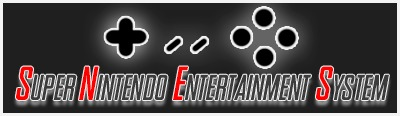

NES
SNES
Nintendo 64
GBA

Axelay
Super Mario World
Super Mario World: Yoshi´s island
Super Mario RPG
Super Mario Kart
Super ghouls and ghosts
The Legend Of Zelda: Link between world
Star Fox
Secret of Mana
F-Zero
Kirby Super Star
Kirby : avalanche
Chrono trigger
Final Fantasy Final Quest
Final Fantasy II
Final Fantasy III
Final fantasy IV
final fantasy V
Final Fantasy VI
Super Castlevania IV
castlevania IV
Super Metroid
Street Fighter II
Donkey Kong Country
Donkey Kong Country II
Donkey Kong Country III
Megaman 7 (Rockman 7)
Megaman X
Megaman X2
Megaman x3
Mortal kombat snes pack (1 , 2 and 3 )
Mortal Kombat
Mortal Kombat II
Mortal Kombat III
Earthbound
Super Double Dragon
here you can download
SneX9 emulator
!